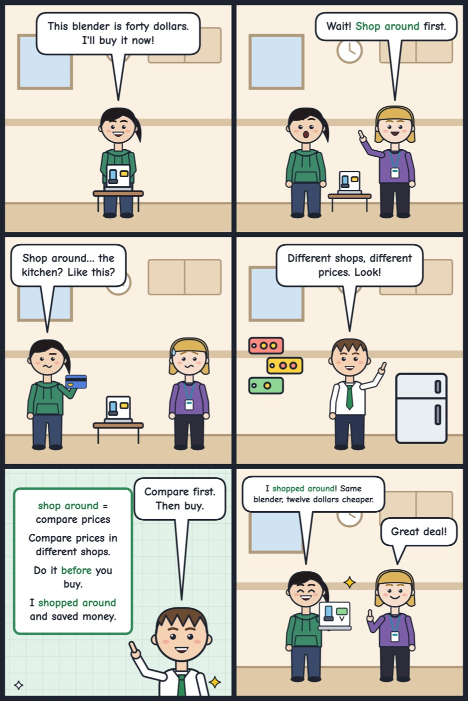

shop around
To compare prices and choices in different places before you buy something.
Before you buy a washing machine, shop around and compare prices.
Tip: Use 'shop around' without an object, often followed by 'for' + the thing you want or 'before' + a decision: 'I'm going to shop around for a new phone.'
Hear it in conversation
Workbook
1. What does it mean?
In this conversation, what does 'shop around' mean?
2. Fill the gap
The first hotel I found was expensive, so I decided to for a better deal.
3. Choose the best reply
Amira: I need a new laptop, but they all seem so expensive.
4. Your turn: speak
Tell me about something you bought recently. How did you decide where to buy it?
Show an example answer
I needed a new pair of running shoes last month, so I shopped around before I bought anything. I checked three local stores and a couple of websites, and I found the same pair for twenty pounds less online. It was worth the extra time.
Answer key: shop around
- 1. C. Compare prices and choices from different places before deciding
- 2. shop around
- 3. C. Why don't you shop around? Different stores often have different deals.
- 4. Example: I needed a new pair of running shoes last month, so I shopped around before I bought anything. I checked three local stores and a couple of websites, and I found the same pair for twenty pounds less online. It was worth the extra time.
See it in a comic
